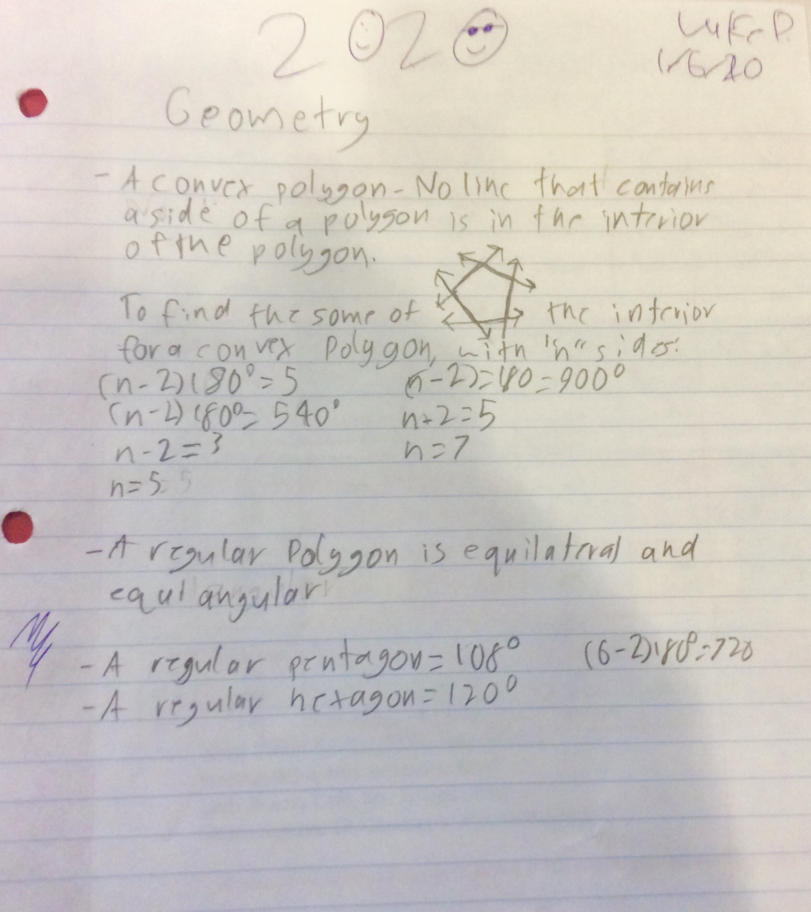

FIRST PAGE
Math Notes

This is my best page of math notes I have taken this year. This page of notes reflects my strength by re-reading over my assignments. I re-read over my notes multiple times to make sure they were the best that they could possibly be.